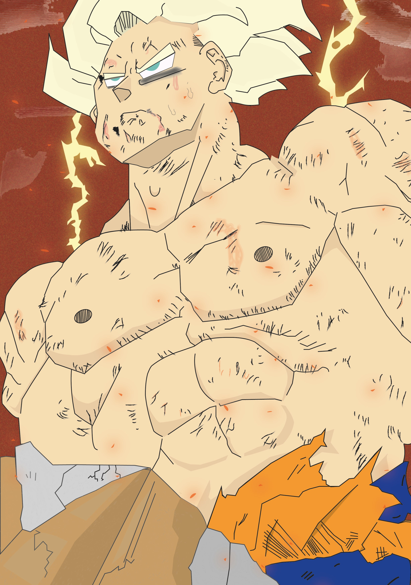
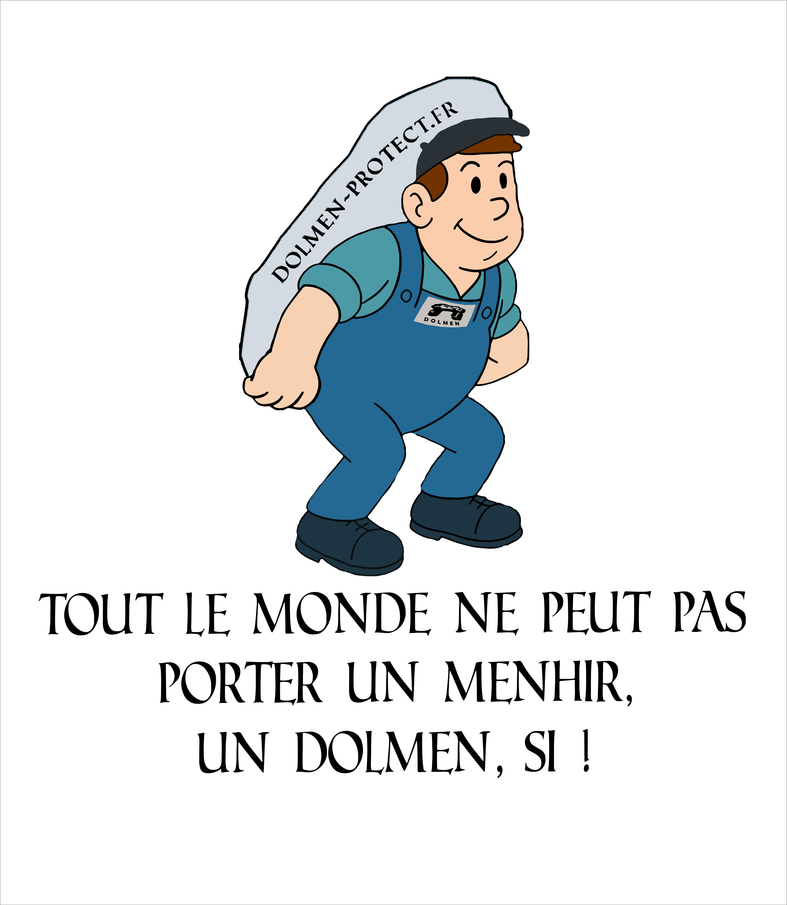
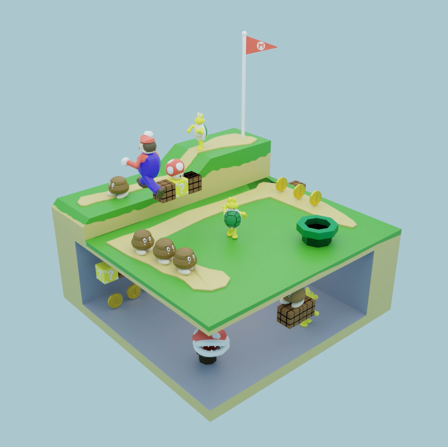
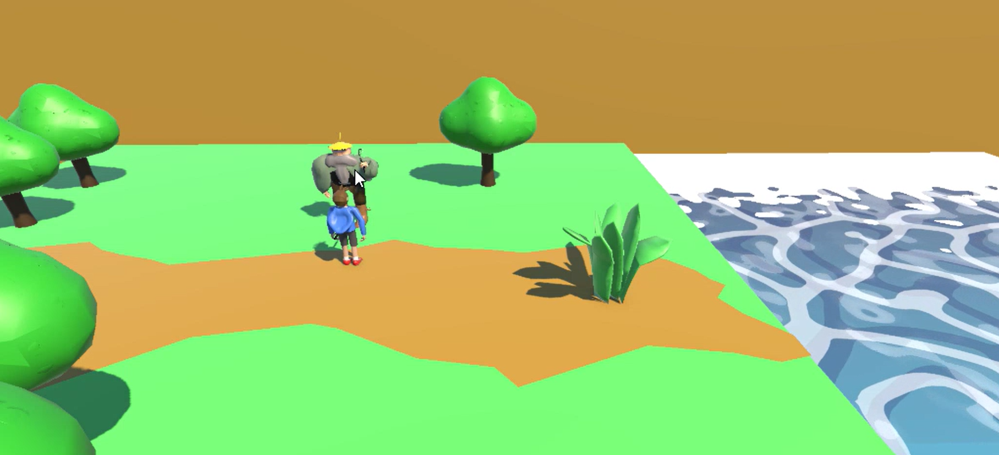
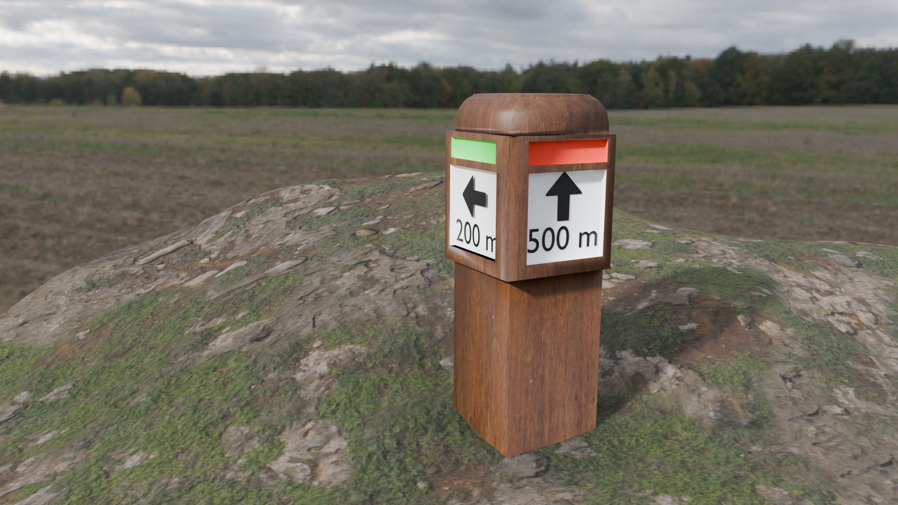
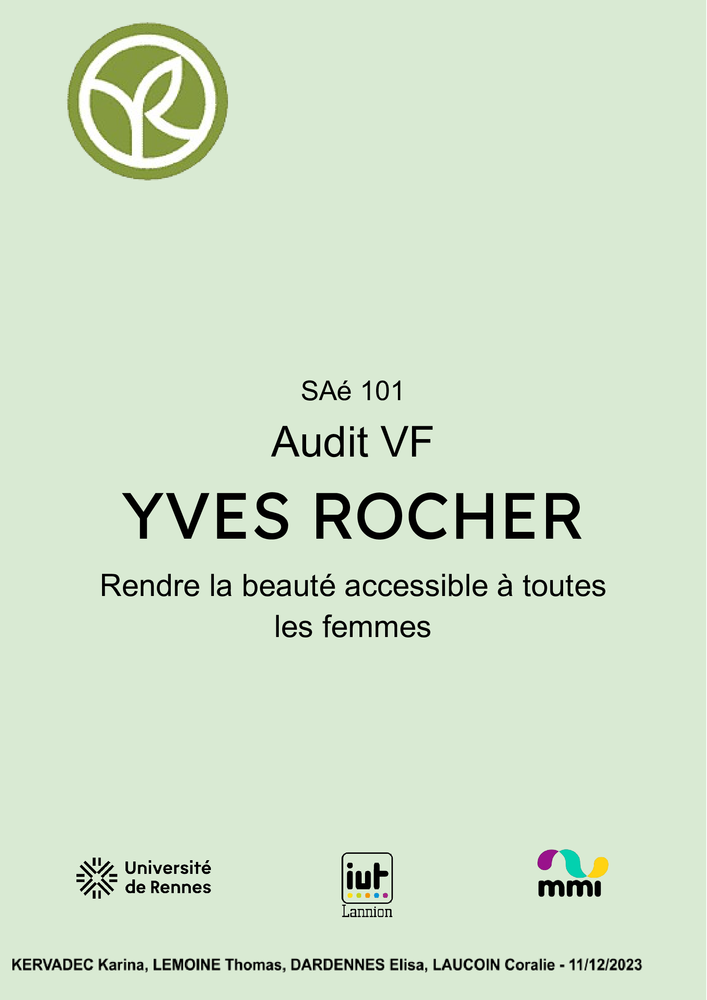
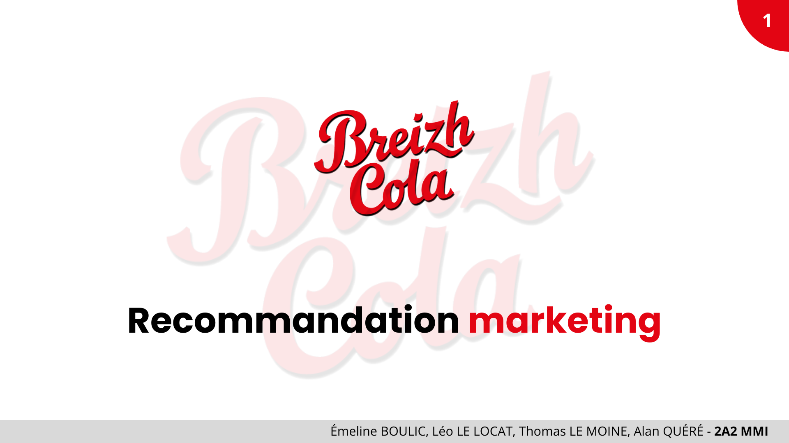
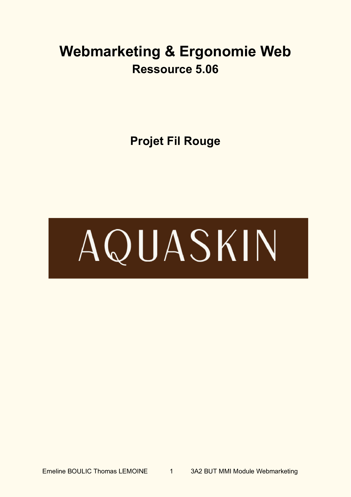

Mes Projets

Mario isométrique

Mecha Freeman

Racaille pixeliser

Mystère d'Andréa Ghez

Goku SSJ Namek

Festival à l'west

T-shirt Dolmen

Diora-mario World

Test Unity

Panneau Jagu

Audit Yves rocher

Étude Breiz cola
